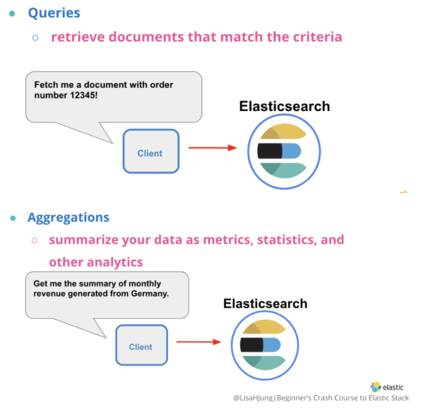
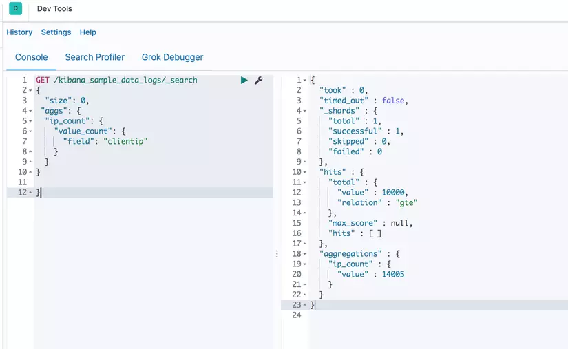
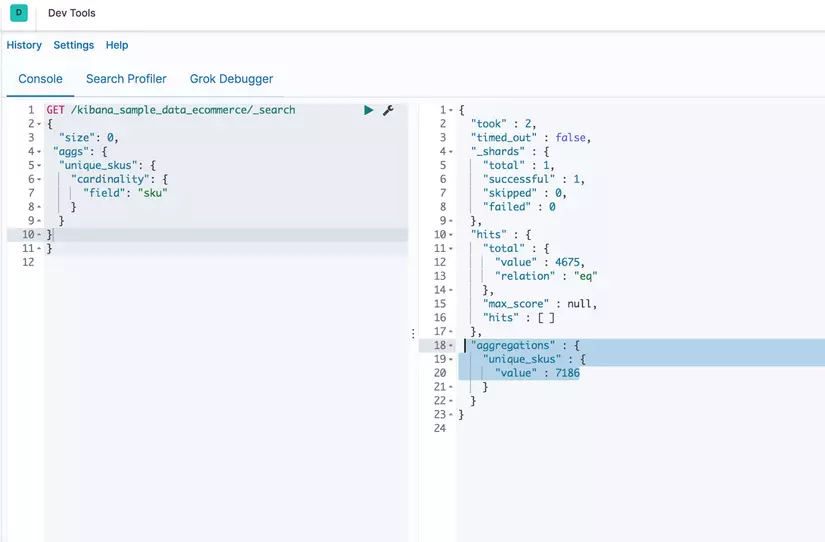
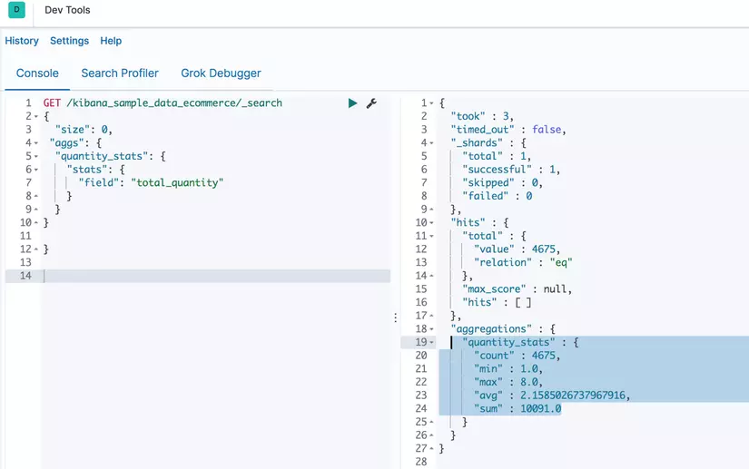
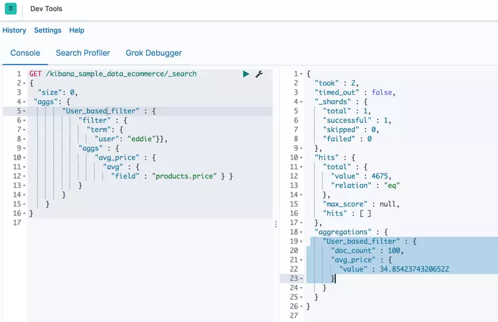
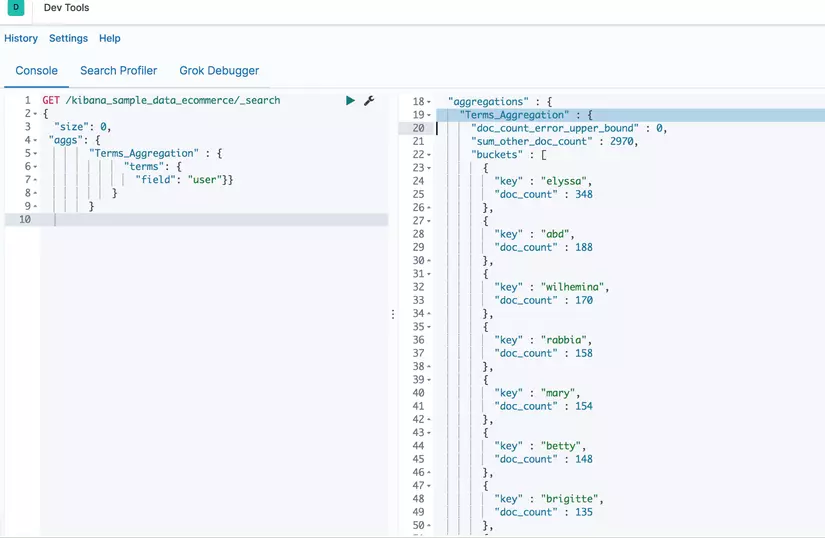
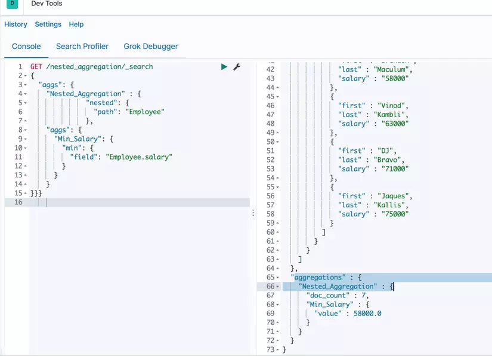

Aggregation¶
Overview¶
Có hai cách chính để tìm kiếm trong Elasticsearch:
-
Queries: Dùng để truy vấn các document phù hợp với các tiêu chí được chỉ định. -
Aggregation: Tổng hợp, trình bày tóm tắt dữ liệu của dưới dạng chỉ số, thống kê và các phân tích khác.

Concepts¶
Elasticsearch định nghĩa Aggregation như sau:
Aggregation
An aggregation summarizes your data as metrics, statistics, or other analytics. Aggregations help you answer questions like:
- What’s the average load time for my website?
- Who are my most valuable customers based on transaction volume?
- What would be considered a large file on my network?
- How many products are in each product category?
Aggregarions giúp tổng hợp, trình bày tóm tắt dữ liệu, thực hiện các tính toán và thống kê sử dụng một search query. Ta có thể truy xuất dữ liệu mà mình muốn sử dụng phương thức GET trong Dev Tools của Kibana UI, CURL hay APIs trong code.
Dưới đây là 2 ví dụ ta có thể sử dụng aggregations:
-
Muốn biết trung bình cộng giá của tất cả sản phẩm trong danh mục hàng hóa.
-
Kiểm tra xem có bao nhiêu sản phẩm có giá trong khoảng 100$ và giá trong khoảng từ 100$ đến 200$.
Syntax¶
Dưới đây là ví dụ về Aggregations syntax:
Trong đó:
- aggs: Cho biết ES sẽ thực hiện truy vấn aggregation.
-
name_of_aggregation: Tên của aggregation mà mình định nghĩa ở bên dưới -
type_of_aggregation: Loại aggregation được sử dụng. -
fieldvàdocument_field_name: Một key-value pair cho ES biết tên của field mà ta muốn thực hiện aggregation
Ví dụ:
GET /kibana_sample_data_logs/_search
{ "size": 0,
"aggs": {
"ip_count": {
"value_count": {
"field": "clientip"
}
}
}
}
Truy vấn trên sẽ trả về tổng số clientip trong index kibana_sample_data_logs:

Categories¶
Aggregations được xếp thành 3 loại:
-
Metric aggregations: tính toán các số liệu, chẳng hạn như tổng hoặc trung bình, từ các field values -
Bucket aggregations: Nhóm các documents lại thành từng nhóm, gọi làbucketshoặcbinsdựa trên field values, ranges, hoặc các tiêu chí khác. -
Pipeline aggregations: Lấy input từ một aggregations khác thay vì lấy input từ documents hay fields.
Ngoài ra, còn có Matrix aggregations—Những aggregation này làm việc trên nhiều hơn một field và cung cấp kết quả thống kê dựa trên các document thu được từ các trường được sử dụng.
Common aggregation and example¶
ES hỗ trợ rất nhiều aggregation, ví dụ với 5 aggregation quan trọng trong Elasticsearch là:
Cardinality aggregation¶
Aggregation này là một single-value aggregation thuộc loại Metric aggregations, sử dụng để tính toán số lượng các giá trị khác nhau của một field cụ thể. Quay lại ví dụ về aggregation syntax ở trên, để tìm xem có bao nhiêu sku trong e-commerce, ta thực hiện truy vấn:
GET /kibana_sample_data_ecommerce/_search
{
"size": 0,
"aggs": {
"unique_skus": {
"cardinality": {
"field": "sku"
}
}
}
}

Stats aggregation¶
Đây là 1 multi-value thuộc Metric aggregations, tính toán số liệu thống kê từ các giá trị số từ các document tổng hợp được. Số liệu thống kê trả về bao gồm min, max, sum, count và avg.
Thử kiểm tra số liệu thống kê field total_quantity trong ví dụ trên:
GET /kibana_sample_data_ecommerce/_search
{
"size": 0,
"aggs": {
"quantity_stats": {
"stats": {
"field": "total_quantity"
}
}
}
}
Kết quả là:

Filter aggregation¶
Aggregarion này thuộc Bucket aggregations, định nghĩa một bucket duy nhất chứa các document thỏa màn điều kiện filter, và có thể thực hiện tính toán số liệu trong bucket này. Ví dụ: ta filter các document có username là eddie và tính trung bình cộng giá của các sản phẩm người đó đã mua:
GET /kibana_sample_data_ecommerce/_search
{ "size": 0,
"aggs": {
"User_based_filter" : {
"filter" : {
"term": {
"user": "eddie"}},
"aggs" : {
"avg_price" : {
"avg" : {
"field" : "products.price" }}
}
}
}
}
Kết quả là:

Terms aggregation¶
Thêm một ví dụ về loại Bucket aggregations khác, tạo ra các bucket từ các giá trị của field, số lượng bucket là động, mỗi giá trị khác nhau của field được chỉ định sẽ tạo ra 1 bucket.
Trong ví dụ dưới đây, ta sẽ thực hiện terms aggregation trên field user. Ở kết quả, ta sẽ có các bucket cho mỗi user, mỗi bucket sẽ chứa số lượng document:
GET /kibana_sample_data_ecommerce/_search
{
"size": 0,
"aggs": {
"Terms_Aggregation" : {
"terms": {
"field": "user"}}
}
}
Kết quả là:

Nested aggregation¶
Đây là một trong những aggregation quan trọng nhất trong Bucket Aggregations. Một Nested Aggregation cho phép tổng hợp một field với nested documents — một field mà có nhiều sub-fields. Một field phải có type là nested trong index mapping thì mới sử dụng Nested Aggregation trên field đó được. Với ví dụ nãy giờ, ta phải thêm field có type là nested, sau đó thực hiện truy vấn:
GET /nested_aggregation/_search
{
"aggs": {
"Nested_Aggregation" : {
"nested": {
"path": "Employee"
},
"aggs": {
"Min_Salary": {
"min": {
"field": "Employee.salary"
}
}
}
}}}
Kết quả:

Còn 1 số aggregation hữu ích như: Date histogram aggregation sử dụng với các data có type là dates; Scripted aggregation sử dụng với scripts; Top hits aggregation sử dụng với các document phù hợp nhất; Range aggregation sử dụng với tập hợp các giá trị trong một khoảng nhất định. Ngoài ra còn rất nhiều aggregation khác nhưng ít thông dụng hơn, có thể xem chi tiết tại Aggregations